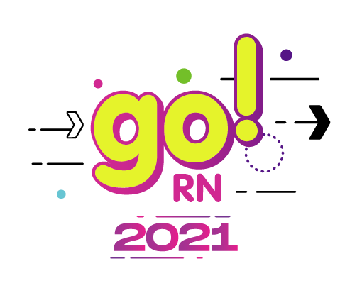

Além do Home Office
Trabalho Distribuído
Agenda
- Quem sou eu?
- Padrões de distribuição de equipes
- COVID-19 acelerou a tendência
- Modelo de trabalho híbrido?
- Padrões de comunicação
- Trazendo as coisas boas do presencial
- Sendo um trabalhador distribuído
- Referências
- Perguntas

Fonte: https://pixabay.com/illustrations/remote-work-office-home-office-5491791/
Apenas a minha opinião!
Quem sou eu?
Vinicius Mendes
Back-end Python Engineer @ Loadsmart desde abr/21
Antes:
- Solucione Sistemas
- Globo.com
- Dataprev
- Professor Substituto na UFRN
Tweetabadá (2009)

Também atendeu outros propósitos em São Paulo e em Santa Catarina.
“Não existe essa simples dicotomia de remoto versus presencial.”
(Martin Fowler, 2015)
Fonte: https://martinfowler.com/articles/remote-or-co-located.html
Padrões de distribuíção de times

Fonte: https://martinfowler.com/articles/remote-or-co-located.html
Single-site ou um único lugar
- Toda a equipe trabalha fisicamente próxima
- Permite rápida colaboração sem precisar de muitas ferramentas
- É possível saber facilmente quem está trabalhando
Fonte: https://martinfowler.com/articles/remote-or-co-located.html
Multi-site ou um vários lugares
- A equipe está dividida em dois ou mais grupos em diferentes lugares
- Possui características semelhantes ao single-site dentro de cada grupo
- Pode gerar ilhas de conhecimento entre os diferentes lugares
Fonte: https://martinfowler.com/articles/remote-or-co-located.html
Trabalhadores satélite
- Boa parte de equipe trabalha nos modelos single-site ou multi-site
- Existem membros do time trabalhando remotamente
- Deve-se ter cuidado e empatia para incluir estes trabalhadores remotos
Fonte: https://martinfowler.com/articles/remote-or-co-located.html
Remote-first ou trabalho distribuido
- Toda a equipe trabalha fisicamente distante
- A colaboração ocorre em um ambiente virtual
- Mais difícil de aplicar modelos de comando e controle
Fonte: https://martinfowler.com/articles/remote-or-co-located.html
Empresas adotam home-office por conta do coronavírus
Estimativa de trabalhadores remotos

O que pensam os CEOs da Fortune 500?
Pesquisa: Retorno ao local de trabalho Mar/2021

Fonte: https://envoy.com/content/ebook/ds02/as/hybrid-work-survey-executive-summary/
Pesquisa: Retorno ao local de trabalho Mar/2021
Fonte: https://envoy.com/content/ebook/ds02/as/hybrid-work-survey-executive-summary/
Pesquisa: Retorno ao local de trabalho Mar/2021
Fonte: https://envoy.com/content/ebook/ds02/as/hybrid-work-survey-executive-summary/
Pesquisa: Trabalho Híbrido (Deloitte, 2021)
Híbrido?
- Para mim é bastante complexo
- Vai existir um regime fixo de escala?
- O que funcionava no remoto deixou de funcionar no híbrido?
- Quem não está trabalhando presencialmente:
- está sendo incluído nas decisões?
- tem o mesmo contexto que teria se estivesse presencial?
Fonte: https://martinfowler.com/articles/remote-or-co-located.html
Híbrido?
Fonte: https://martinfowler.com/articles/remote-or-co-located.html (Modificado)
Híbrido?
Fonte: https://martinfowler.com/articles/remote-or-co-located.html
“Trabalho remoto é uma disciplina para o trabalhador individual, mas trabalho distribuído é uma disciplina para toda a organização.”
(Antony Wing Kosner, 2020)
Padrões de comunicação
Comunicação síncrona
- Geralmente demanda uma interação imediata
- Tende a ser uma comunicação mais rápida
- Se não houver o devido registro se torna efêmera
- Oferece pouco espaço para análise e elaboração e propicia decisões menos embasadas
- Pode comprometer o foco em tarefas mais complexas
Comunicação assíncrona
- Pode esperar o interlocutor ter disponibilidade para responder
- Permite uma análise mais elaborada e propicia decisões mais embasadas
- Geralmente já mantém o registro do diálogo automaticamente
- Ainda é preciso ter cuidado para não deixar os registros muito espalhados
Comunicação assíncrona

Fonte: https://groups.google.com/g/net.unix-wizards/c/8twfRPM79u0/m/1xlglzrWrU0J
Comunicação assíncrona

Comunicação assíncrona
Comunicação assíncrona

Ferramentas para colaboração distribuída
- Mensageiros instantâneos: Whatsapp, Telegram, Slack, Discord, Teams
- Dependendo do grau de urgência da resposta podem se confundir com comunicações síncronas
- E-mails, Wikis, Documentos
- Ferramentas Colaborativas: Figma, Notion, Google Docs, Office 365
- Lousas virtuais: Miro, Mural, Excalidraw
- Assinatura de documentos: Docusign, Certificado digital A3
- Dê preferência a diferentes ferramentas para a vida social e a profissional
- Se não for possível tente contas distintas
Assinatura digital vs Assinatura digitalizada
- Assinatura digital
- Baseada em criptografia e garante a autenticidade e a integridade do documento.
- Assinatura digitalizada
- Uma imagem da assinatura física e é facilmente fraudável
Comunique-se mais através de fontes da verdade
Comunique-se mais através de fontes da verdade
Comunique-se mais através de fontes da verdade

Clareza na comunicação
- Torne a informação mais acessível para todos os membros da equipe
- Tenha metas e expectativas claras e transparentes
- Comunicação em excesso é melhor que falta de comunicação
- Tome cuidado para não mandar mensagens diferentes em canais diferentes
Etiqueta para comunicadores instantâneos
Etiqueta para comunicadores instantâneos

Etiqueta para comunicadores instantâneos
- Menos mensagens significam menos notificações
- Escreva mensagens mais completas e bem formatadas
- Use threads, mas lembre-se de deixar todo mundo ciente das mensagens mais importantes
- Substitua mensagens pontuais por emoji reactions
- Mantenha o seu perfil atualizado: papel, equipe, jornada de trabalho
- Prefira canais públicos por padrão
- Use menções com sabedoria
Inspirador por: https://slack.com/intl/en-br/blog/collaboration/etiquette-tips-in-slack
Comunicadores instantãneos não são bases de conhecimento
- Mova as discussões para ferramentas mais específicas do assunto em questão.
- Utilize os comunicadores para informar as pessoas de que você está esperando uma resposta em uma outra ferramenta.
- Documente os resultados das comunicações, sejam síncronas ou assíncronas.
- Evite explicar várias vezes a mesma coisa
- Se perceber que está fazendo isso, pare e documente
- Passe a responder mais com um link pra documentação
- Deixe bem documentado e você vai ter mais tempo para produzir.
Realizando uma tarefa de forma distribuída
- Verifique se as informações que você precisa estão bem documentadas.
- Se não encontrar, pergunte em um canal público. Não precisa ter vergonha.
- Ao fim, tente contribuir documentando a informação que estava faltando.
- Peça revisão do seu trabalho aos seus pares. É uma oportunidade para corrigir falhas e disseminar conhecimento.
Senso de urgência
- Nem toda pergunta precisa de uma resposa imediata. Você deve definir a expectativa.
- Se você pode esperar por horas, mande a mensagem e espere.
- Se você precisa de uma resposta em poucos minutos, mencione alguém.
- Se você precisa de uma resposta imediata, deixe isso claro para todos.
Senso de urgência

Fonte: https://workchronicles.com/
Senso de urgência
- Urgente e importante: Faça, mas evite este cenário
- Não urgente e importante: Planeje
- Urgente e não importante: Evite
- Não urgente e não importante: Elimine
Sugestões para trabalho em equipe
- Tenha uma rotina clara com a sua equipe
- Se você agendar uma reunião, forneça o máximo de contexto antes de iniciar
- Entrar em uma reunião sem contexto suficiente pode levar a decisões ruins ou a desperdício de tempo
- O tempo gasto com uma reunião é multiplicado pelo número de participantes
- Reuniões sempre devem ter um intervalo de tempo bem definido e isto deve ser seguido.
- Gravar uma reunião pode ser útil, mas tomar nota e documentar as decisões pode ser melhor.
- Lembre-se que a equipe precisa de tempo de concentração suficiente para trabalhar nas tarefas.
Sugestões para trabalho em equipe

Fonte: https://workchronicles.com/
Cultura Loadsmart
Se um trabalhador está remoto, o time inteiro deve trabalhar remoto.
Obrigado pela atenção!
Slides: vbmendes.github.io/distributed-work-beyond-the-home-office
Tem algo a adicionar? Fale comigo nestas redes:
- github.com/vbmendes
- twitter.com/vbmendes
- linkedin.com/in/viniciusmendes/
Estamos contratando: https://jobs.lever.co/loadsmart/
Perguntas?